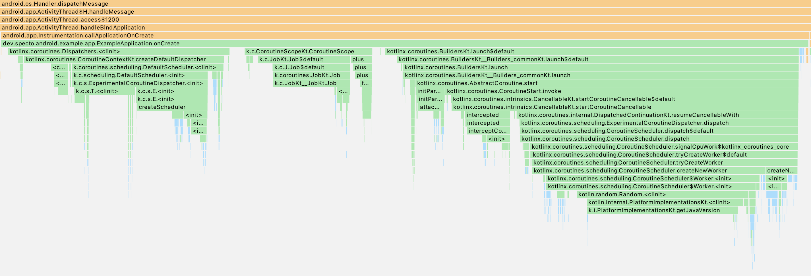

我收回这篇文章得出的结论。这些测试是运行在调试模式的 app，与生产环境下性能有着巨大的差异：不要在可调试的 Android App 上运行基准测试 (就像我所做的)。
你知道 Kotlin 协程的初始化开销很大吗？好吧，也许不是所有情况下都有意义，但在应用程序启动方面，每一毫秒的提升都是值得的。我发现简单地启动第一个协程可能需要超过 100 毫秒。 😱
大多数应用程序在启动时都会执行各种任务：初始化第三方库，设置 services 或者定期 jobs，发送 HTTP 请求以获取数据……有些任务必须在主线程同步执行，其余的可以移动到后台线程执行，以加快程序的启动并保持其响应速度。官方推荐 Android 上的后台处理使用协程，在启动时也很容易使用它们，比如：
class MyApplication : Application() {
override fun onCreate() {
super.onCreate()
// Tasks that must happen synchronously.
CoroutineScope(Dispatchers.Default).launch {
// Everything else.
}
}
}
Moto G6 运行的系统版本是 Android 9，对于 2020 年的标准来说是一个低端机 — 在 CoroutineScope(Dispatchers.Default).launch { … } 这一行阻塞住主线程的平均时间为 110±18ms (n=10，协程版本 1.4.2)，不管协程本身的执行内容如何。让我们看看发送了什么，以下是使用 Android Profiler 捕获的跟踪：

大概有 15% 的时间花在了创建 CoroutineScope，30% 花在创建 Dispatchers.Default，55% 是实际 launch 调用。所以没有任何单一的原因。我们可以看到 kotlin.random.Random.\<clinit>（静态初始化）占 launch 调用的很大比例，或许这是可以避免的。但是用户在使用这些公共 API 时却不知道能做些什么。
在 Kotlin 协程之前，后台线程的主要建议是 使用 ExecutorService，比如：
class MyApplication : Application() {
override fun onCreate() {
super.onCreate()
// Tasks that must happen synchronously.
Executors.newSingleThreadExecutor().execute {
// Everything else.
}
}
}
在相同设备上，创建 ExecutorService 并排队执行平均耗时 1ms ，而协程则耗时 110ms。我发现这适用于所有的 Executors 工厂方法（它们使使用各种类型的线程池成为可能）。🚀
正如 Jake Wharton 所指出的，部分原因是由于 ExecutorService 是由 Zygote 预加载的，Zogyte 是 Android Framework 的一个特殊部分，因此可以在进程之间共享代码。其他的并发框架，比如协程没有预先加载，也会有相对较高的初始化成本。
虽然说协程对于 ExecutorService 来说有很多优势。他们有作用域，挂起函数，比线程轻量级得多等等。 一般建议在 Android 应用程序中使用它们，但是令人印象深刻的是它的初始化成本。也许 Kotlin 和 Android 团队将来会优化它。但是在此之前，最好避免在 Application 类或者是主 Activity 使用它，如果你的启动时间是个主要问题。
如果发现译文存在错误或其他需要改进的地方，欢迎到 掘金翻译计划 对译文进行修改并 PR，也可获得相应奖励积分。文章开头的 本文永久链接 即为本文在 GitHub 上的 MarkDown 链接。
掘金翻译计划 是一个翻译优质互联网技术文章的社区，文章来源为 掘金 上的英文分享文章。内容覆盖 Android、iOS、前端、后端、区块链、产品、设计、人工智能等领域，想要查看更多优质译文请持续关注 掘金翻译计划、官方微博、知乎专栏。